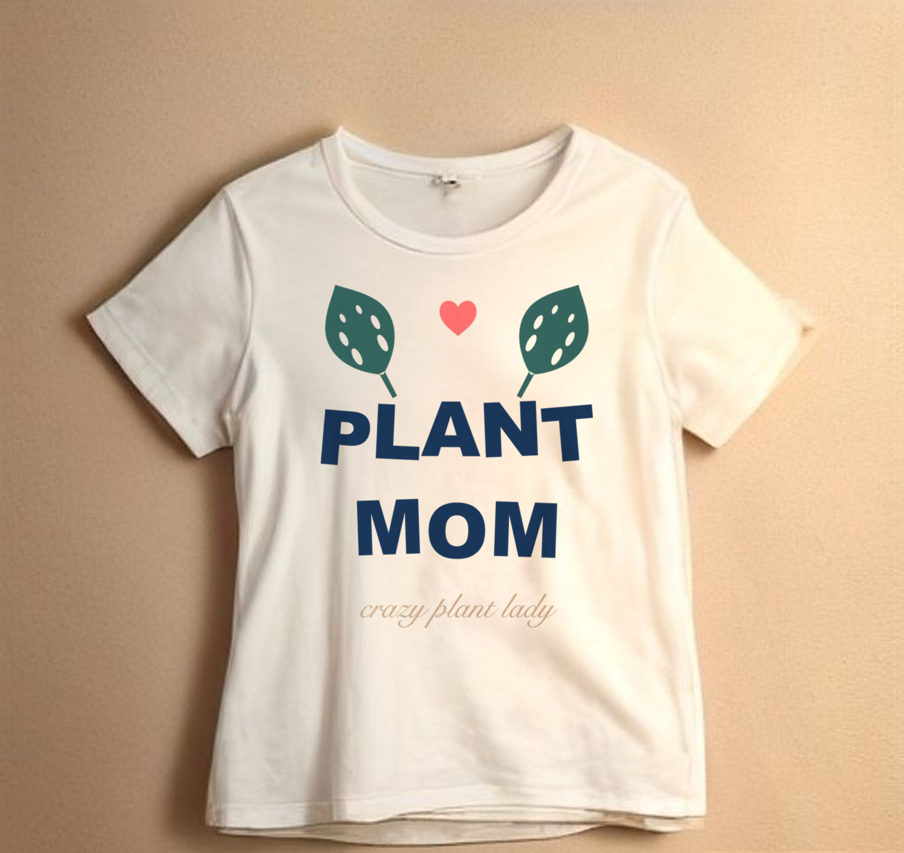

Cricut Material Guide: What to Cut, What to Skip, and What It Costs

The sale bin is where beginner material decisions go wrong. A pack of heavyweight board looks like a bargain until your Fine-Point blade barely scores it, the carriage grinds, and you pull a shredded mess off a mat you replaced last week.
Materials are not a long list of unrelated products. They fall into four families, and each family carries one blade and one honest question: can my machine actually cut this? Here is how the families break down, what each one costs, and where I would spend money and where I would not.
Adhesive vinyl: the backbone of everything
If you only stock one material, stock this. Permanent vinyl is for anything that needs to survive washing, weather, or handling: mugs, tumblers, car windows, mailbox numbers, outdoor signs. Removable vinyl is for walls, glass you want to redo, and short-lived seasonal decor, because it lifts without taking paint with it.
Finish matters more than brand. Matte and dark colors hide bubbles and fingerprints. Glossy shows every flaw but photographs beautifully. Glitter, holographic, and metallic are thicker and less consistent, so they need more pressure, slower speed, and patience while weeding. A 12x12 sheet runs roughly $2 to $4 at retail; rolls and multi-packs bring the per-sheet cost down, so buy a roll in the two or three colors you actually use instead of a rainbow pack of 30 you will never finish.
Heat transfer vinyl: the one that has rules
HTV is for fabric, and it is unforgiving about two things: it must be mirrored before cutting, and it needs real heat and pressure to bond. Regular HTV handles cotton and cotton blends. Stretch and thin HTV versions are built for performance fabric and stretchy knits, where standard HTV cracks along the fibers. Glitter and puff styles are thicker, need higher temperatures, and read as intentional texture rather than a smooth print.
Estimate roughly $2 to $5 per sheet here, and count the garment in your project cost, because a failed press wastes both. Designs already sized for a standard shirt front live in the shop, which removes one sizing mistake from the equation. Pre-press for a few seconds to remove moisture, press on a firm surface, and follow the vinyl maker's temperature and peel instructions rather than a generic chart.
Cardstock and paper: cheap practice, real projects
Paper is where you learn your machine. Standard 65 lb cardstock cuts cleanly with the Fine-Point blade on the cardstock setting, which makes it the cheapest way to burn through test cuts while you learn pressure and mat tack. Heavier 80 and 110 lb stock, and glitter cardstock, need more pressure and sometimes a second pass on the same cut setting.
Thick poster board is usually a hand-cutting job, not a machine job, and very thick chipboard belongs to the harder family below. If your projects involve folds, a scoring stylus or scoring wheel saves you from cracked edges, and for folded cards it is worth the extra tool. Paper costs almost nothing per project, which is exactly why it is the best material to practice on. Practice is also free when the design is: pull a pattern from the free SVG library before you spend money on a paid file you might not use.
Faux leather and genuine leather
Thin faux leather is beginner-friendly on a strong-grip mat with the faux leather setting, and it makes earrings, keychain fobs, bookmarks, and bows that look far more expensive than they are, typically about $1 to $3 per sheet. Genuine leather is a different job: it needs a Deep-Point blade on an Explore machine or the Knife Blade on a Maker, cuts slowly, and wants a fresh mat and a test cut on a corner you were going to trim anyway.
Wood, chipboard, and basswood
This family is the reason people buy a Maker. Thin basswood and chipboard cut with the Knife Blade, which runs multiple slow passes and can take a long time on a detailed design. Use a strong-grip mat, tape down the edges if the sheet wants to lift, and expect a test cut to tell you more than any settings chart. On an Explore machine, skip this family entirely: there is no Knife Blade for it.
Acrylic: the honest answer
A Cricut does not cut acrylic sheet. It cuts vinyl that you apply to acrylic blanks, and that is a perfectly good business: keychains, cake toppers, ready-to-decorate ornaments. If you want cut acrylic, that is a laser job. Knowing the boundary saves you from a $40 experiment.
Print Then Cut materials
Printable sticker paper, printable magnet sheets, and printable vinyl all go through the same workflow: design, print on your home printer, then let the machine read the registration marks and cut around the print. Calibrate the sensor on plain paper first, keep the room's lighting steady, and avoid glossy paper that reflects the sensor light, or the machine will fail to read the marks.
Material cheat sheet
| Material | Blade or tool | Getting it right | Cost, rough estimate |
|---|---|---|---|
| Adhesive vinyl, matte | Fine-Point | Standard pressure, test cut, room-temperature surface | $2-4 per sheet |
| Glitter or holographic vinyl | Fine-Point | More pressure, slower speed, reverse-weed | $3-6 per sheet |
| Heat transfer vinyl | Fine-Point | Mirror the design, firm pressing surface | $2-5 per sheet |
| Cardstock, 65 lb | Fine-Point | Cardstock setting, light-grip mat | $0.15-0.40 per sheet |
| Faux leather | Fine-Point or Micro-Tip | Strong-grip mat, faux leather setting | $1-3 per sheet |
| Genuine leather | Deep-Point or Knife Blade | Test on a corner, trim waste later | $5 and up per piece |
| Thin basswood or chipboard | Knife Blade (Maker) | Strong-grip mat, many slow passes | $1-4 per sheet |
| Acrylic sheet | Not supported | Apply vinyl to acrylic blanks instead | blanks vary widely |
| Printable sticker paper | Print Then Cut, Fine-Point | Calibrate the sensor before the first project | $0.50-1.50 per sheet |
Treat every price as a rough estimate: brand, quantity, and sales move these numbers constantly, and a bundle deal can halve the per-sheet cost overnight.
Can I cut leather on an Explore machine?
Thin faux leather, yes, with the Fine-Point blade and a strong-grip mat. Genuine leather needs a Deep-Point blade on Explore models, and thick leather or leather with a firm backing is realistically a Knife Blade job on a Maker.
Is expensive vinyl worth the extra money?
Usually yes, for the liner and the consistency more than the vinyl itself. Cheap sheets vary in thickness, which means no single setting works across the whole sheet and you waste more material than you saved. One mid-priced brand you understand beats six bargain brands you have to relearn.
What is the cheapest way to practice?
Scrap cardstock and paper. The cut settings, mat behavior, and blade wear you learn there transfer directly to vinyl, and a mistake costs cents instead of dollars. Practice weeding on cheap contact-paper scraps too.
Why does Design Space say my material is not supported?
Because the blade you have selected cannot handle it. The Knife Blade materials, wood, thick chipboard, and heavy leather, only work on Maker-family machines, and some settings require a specific blade to be installed before the option appears.
Do I need a strong-grip mat for hard materials?
Yes for wood, chipboard, genuine leather, and anything heavy or stiff. On softer materials a strong-grip mat can tear the piece when you remove it, so keep a standard and a light-grip mat on hand and match the tack to what you are cutting.
Pick the material, then pick the pattern: start with a quick win from the free SVG library, or grab a tested multi-file bundle in the shop with designs sized for vinyl, HTV, and faux leather.
🛒 Recommended Cricut Materials for This Project
- Permanent Adhesive Vinyl (Mugs, Signs, Tumblers): Oracal 651 Glossy & Matte Permanent Vinyl Multipack
- Heat Transfer Vinyl (T-Shirts & Tote Bags): Siser EasyWeed HTV Roll (Warm Peel, CPSIA Certified)
- Transfer Tape & Tools: HTVRONT Medium-Tack Clear Transfer Tape + XL Scraper
- Heavyweight Cardstock (Toppers & Keepsakes): 100lb Smooth Core Cardstock Variety Pack
Grab the Free 8-Design SVG Starter Pack + Cut Settings PDF
Want cut-ready files to practice this tutorial? Enter your email to unlock the Starter Pack ZIP immediately.
⬇️ Download Free Starter Pack (.ZIP)